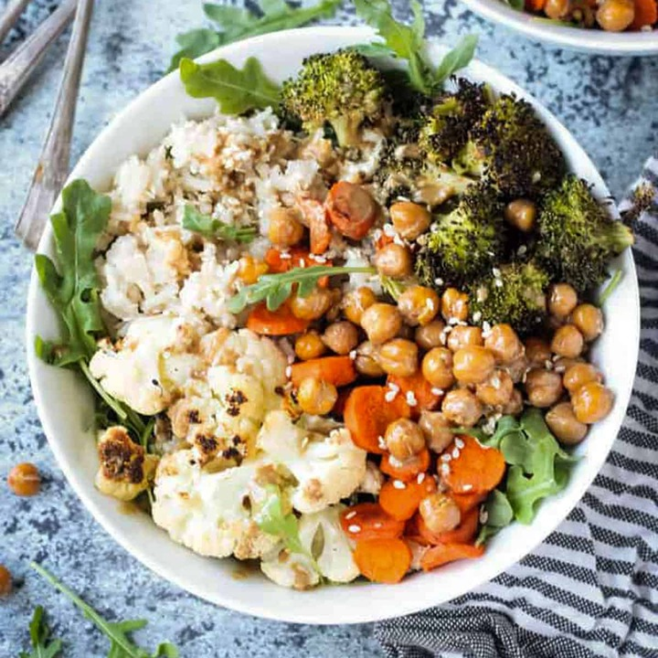

Rice Bowls with Grilled Vegetables

Ingredients:
- 1 10-ounce bag broccoli florets
- 2 red bell peppers, chopped
- 1 large red onion, chopped
- 4 carrots, sliced into ¼-inch thick rounds
- olive oil to drizzle
- salt and pepper
- ½ teaspoon garlic powder
- 1 (15.5-ounce can) chickpeas, drained and rinsed
- 2 large garlic cloves, chopped
- ¼ cup cilantro
- ¼ cup parsley
- ¼ cup basil
- 2 tablespoons freshly squeezed lemon juice
- ½ cup tahini
- 2-3 uncooked pouches microwavable rice (welove Seeds of Change Organic Seven Whole Grains here)
- ½ cup crumbled feta cheese (or less, depending on your preference)
Instructions:
- Preheat the oven to 425 degrees. Lay the broccoli, peppers, onions, and carrots out on a large rimmed baking sheet. Drizzle the vegetables with olive oil and season generously with salt and pepper and the garlic powder. Bake for 25 minutes or until vegetables are fork tender, tossing the broccoli halfway through so it doesn’t burn.
- Meanwhile, preheat the air fryer to 400 degrees. In a small bowl, add the chickpeas, drizzle lightly with olive oil, season with salt and pepper, and air fry for 10minutes or until chickpeas are crispy.
- While vegetables and chickpeas are cooking, prepare the tahini sauce. In a food processor, pulse together the garlic, cilantro, parsley, basil, lemon juice, olive oil, and 1/3 cup water until combined. Add the tahini, ¼ teaspoon of salt, and season with pepper and blend until creamy and smooth. Taste and adjust with more salt, if needed.
- Once vegetables are about to be done, prepare your rice. Divide the cooked rice into bowls. When ready, assemble your bowls. Top the rice with vegetables and chickpeas and drizzle with tahini dressing. Sprinkle with feta and serve.